Atlas de imagens.
Registros clínicos organizados por doença, em ordem alfabética. Imagens reais, de caráter educativo.
2.704 imagens · 206 doenças
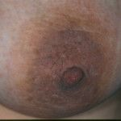


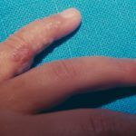
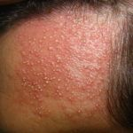
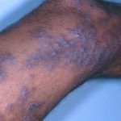
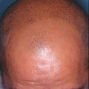
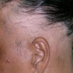
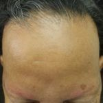


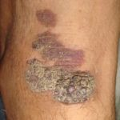

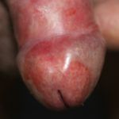


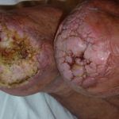


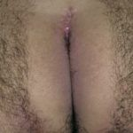


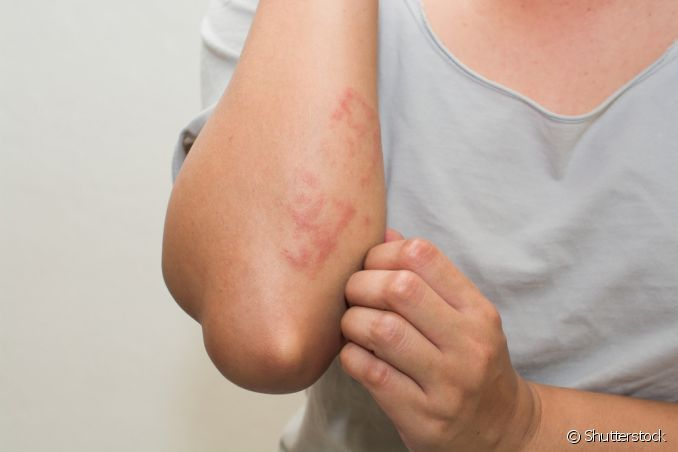
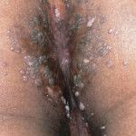


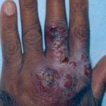

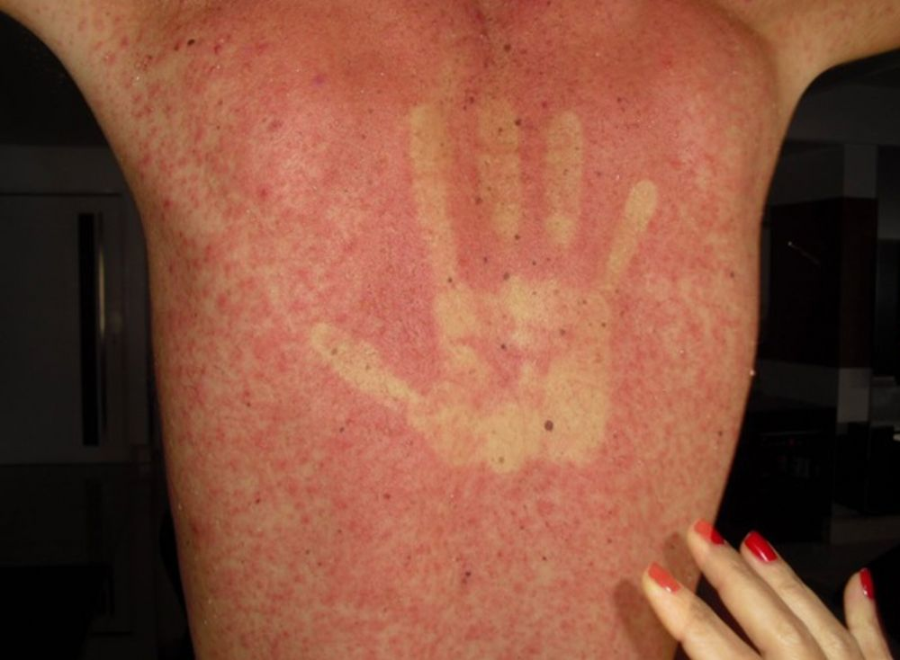

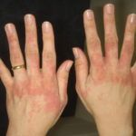


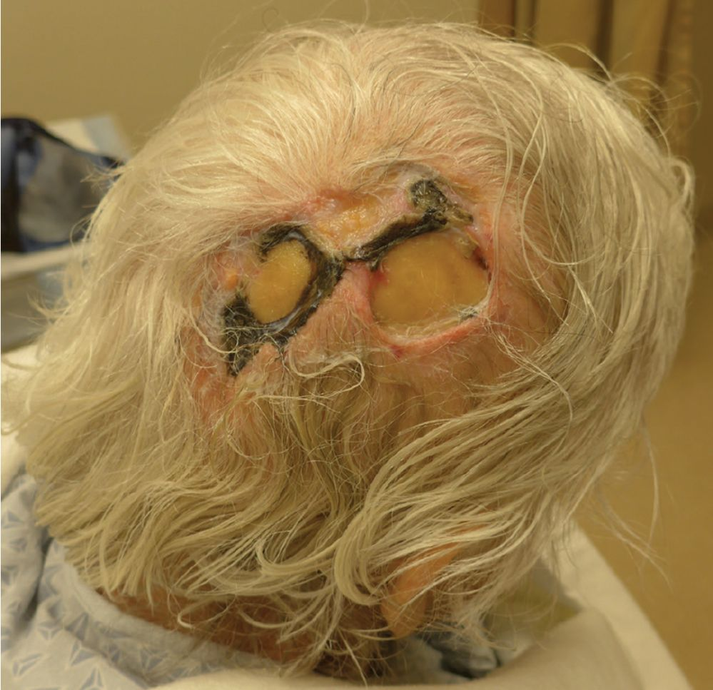
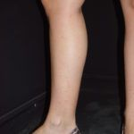
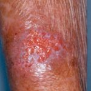


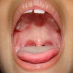

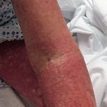


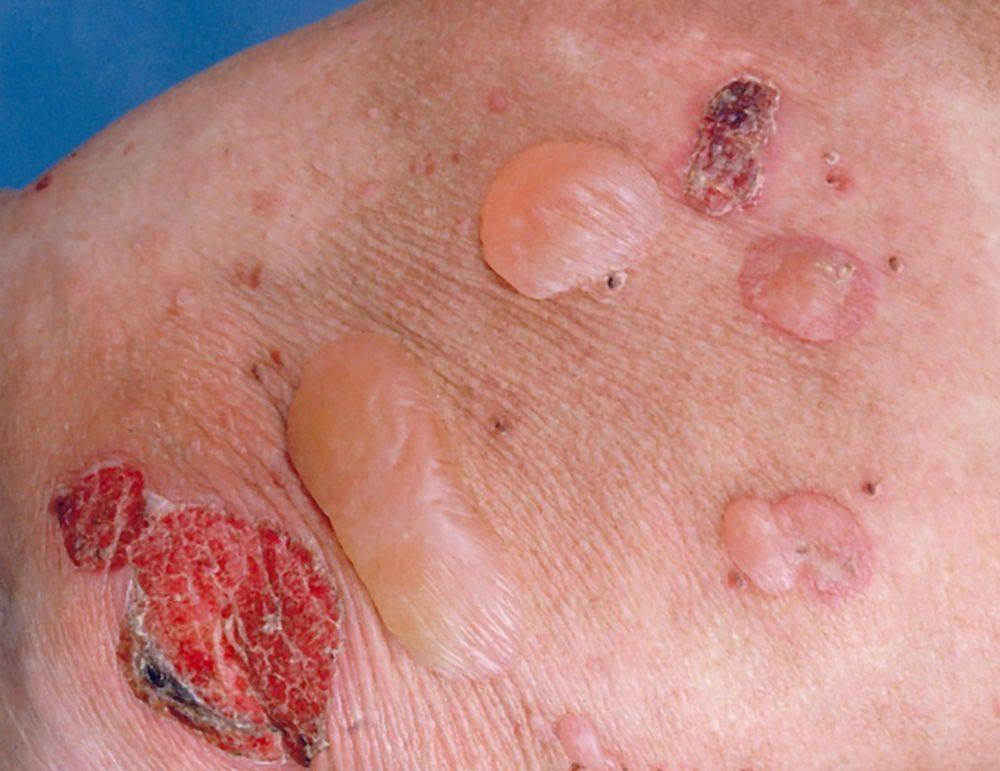


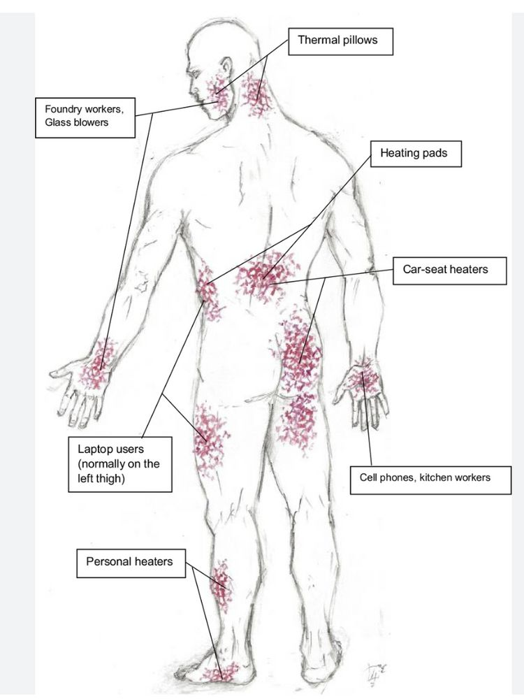
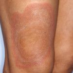


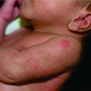
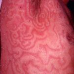

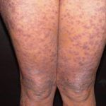


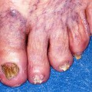


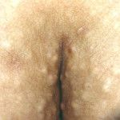
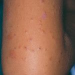


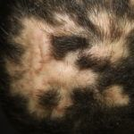


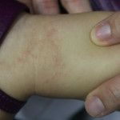


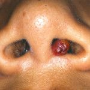


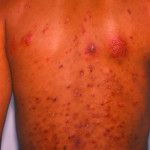
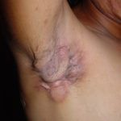
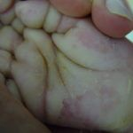
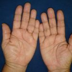
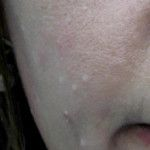
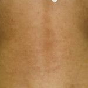
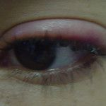

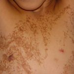
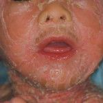
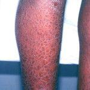
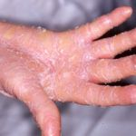
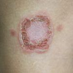
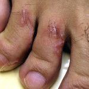
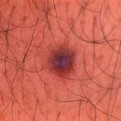

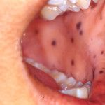
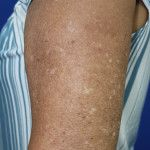
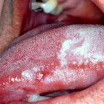


Nenhum resultado no atlas.
Agende sua visita
Sua pele merece um olhar atento.
Fale com nossa equipe e faça parte da melhor experiência em saúde, beleza e bem-estar do Recife.
Agendar pelo WhatsApp